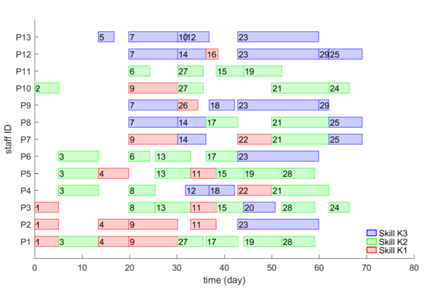
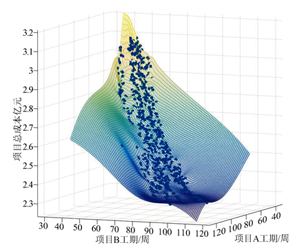

| I'm a second-year student in Aalto University’s Master Program in Data Science. Also, I'm a double master's degree student studying at EIT Digital Master School. (First-year, I studied in Nice, France at Université Côte d'Azur; Second-year, I'm studying in Espoo, Finland at Aalto University). Prior to that, I received my Bachelor of Engineering degree from Yangzhou University, advised by Professor Zhenqiang Bao, where I majored in Software Engineering. My work lies in the search-based optimization technique, machine learning and reinforcement learning, with a focus on the trajectory optimization of simulated characters. I have previously worked for LiveRamp and Didi (AI labs). |
— 2019 —
|  |
A Multi-objective Model for Multi-skill Project Scheduling Problem considering Perform
Efficiency
Chong Zhu, Yuan Xue, Zhijie He, Zhenqiang Bao, Zhaoyue Zhang, Kaixuan Hu IEEE International Conference on Industrial Engineering and Systems Management (IESM 2019) [Project page] [Paper] |
— 2018 —
|  |
Research on a Model of Multi-Project Parallel Scheduling with Flexible Competitive
Collaboration
Planning Chong Zhu, Zhijie He, Yuan Xue, Kaixuan Hu, Zhenqiang Bao, Zhaoyue Zhang Management Science and Engineering Vol. 7 No. 4 (December 2018) [Project page] [Paper] |